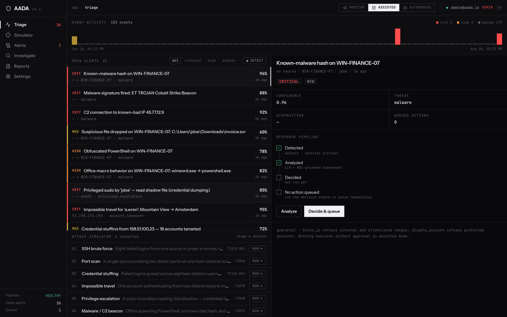

Attacksclick to run
Firewall block list
Incoming log0 events
Nothing running
Alerts raised0
Responseassisted
Audit trail
AADA reads security logs, spots attacks, scores them and proposes a fix, then waits for a person before it touches anything. Pick an attack from the list. The detection rules and the approval policy on this page use the same thresholds and scoring as the real service, rewritten to run in your browser.
Six rules read every event. Each one is a plain function with a threshold, so you can see exactly why an alert fired.
| Rule | Fires when | MITRE ATT&CK |
|---|---|---|
| SSH brute force | 5 or more failed SSH logins from one address inside 60 seconds. A successful login from the same address makes it critical. | T1110.001 |
| Port scan | One address is refused on 15 or more ports, or on 10 or more hosts, inside 60 seconds. | T1046 |
| Credential stuffing | Failed logins against 10 or more different usernames from one address inside 5 minutes, at most 3 tries each. | T1110.004 |
| Impossible travel | The same account logs in from two places more than 500 km apart, faster than 900 km/h could cover. | T1078 |
| Privilege escalation | A sudo command reads the shadow file, edits sudoers, sets a setuid bit, changes accounts or opens a root shell. | T1548.003 |
| Malware indicators | A known-bad file hash, traffic to a known command-and-control address, an IDS malware signature, encoded PowerShell, or Office starting a shell. | T1204 · T1071 |
Analysis can be uncertain. The authority to act is a fixed policy you can read, set by the mode switch at the top.
Every proposed fix is recorded as a recommendation. Nothing is queued and nothing runs.
Every proposed fix waits in a queue until someone approves or denies it. This is the default.
Blocking an address runs on its own when confidence is at least 0.80 and risk at least 60. Isolating a host always goes to a person.
This page has no server. The attacks are synthetic log lines, the firewall is a list in memory, and risk comes from the detection score alone.
The real project is a FastAPI and PostgreSQL service with a React console. It adds an LLM analyst grounded in a security knowledge base, threat-intel lookups, incident reports, and an audit log in the database. Its remediation backends are simulations too, by design.
Read the code on GitHub, or run the whole thing with docker compose up.
